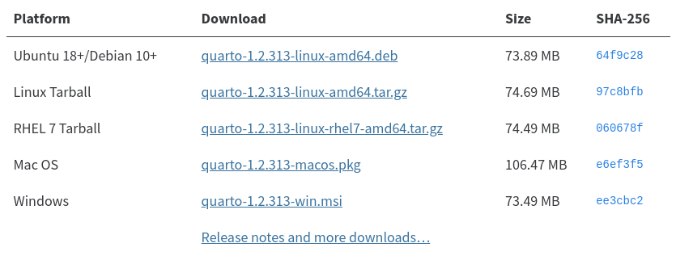

classeur = FileAttachment("data/afrika.xlsx").xlsx()TP1 - Savoir faire des cartes interactives avec Quarto et bertin
L’objectif de ce TP est d’apprendre à créer des cartes interactives avec Quarto et la bibliothèque JavaScript bertin.

Responsables pédagogiques
Manhamady OUEDRAOGO (Burkina Faso) & Nicolas LAMBERT (France)
Ont participé à l’élaboration de ce module
Claude GRASLAND (France), Souleymane Sidi TRAORE (Mali), Malika MADELIN (France), Sébastien REY-COYREHOURCQ (France), Vakaramoko BAMBA (Côte d’Ivoire), Hugues PECOUT (France), Yentougle MOUTORE (Togo), Bénédicte GARNIER (France), Côomlan Charles HOUNTON (Bénin), Pauline GLUSKI (France).
1. Démarrer avec Quarto
1.1 Environnement logiciel.
Ce TP s’effectue dans le logiciel RStudio. Pour l’installer, vous pouvez vous rendre sur cette page. Puis, vous devez installer Quarto.

1.2 Créer un document Quarto
- Ouvrir le logiciel RStudio
- créer un document Quarto (file > New File > Quarto Document)

- cliquer sur “Create Empty Document”.
- Mettez votre nom
- Sauvegardez le fichier dans le dossier de votre choix.
1.3 Rappel des principes
Les chunks ojs….
- l’ordre des cellules n’a pas d’importance
Toutes les instructions à suivre s’écrivent dans des chunks ojs
```{ojs}
```Pour générer le document, il faut clicher sur le bouton render (Ctrl+Shift+K)
1.4 Documentation et exemples
Au fil de ce notebook, vous pourrez vous référez à des éléments de documentation en cliquant sur cet icône.

Vous pourrez également accéder à des exemples pédagogiques et des demos en ligne en cliquant sur celui-là.

2. Les données
Présentation des données….
2.1 Import des données attributaires
Dans {ojs}, on importe les données avec l’instruction FileAttachment() 
La fonction .xlsx()  permet d’importer des tableurs excel.
permet d’importer des tableurs excel.
classeur.sheetNames permet de voir la liste des feuilles contenues dans le classeur excel
classeur.sheetNamesVisualisons les metadonnées avec Inputs.table() 
Inputs.table(classeur.sheet("meta", {headers:true}))Et créons une variable data contenant les données de feuille data
data = classeur.sheet("data", {headers:true})Visualisons-la.
Inputs.table(data)2.2 Import des données géométriques
Import du fond de carte
countries = FileAttachment("data/africa.json").json()Le fond de carte est au format geoJSON
countriesPour la visualiser, on a besoin d’importer une bibliothèque de cartographie. Ici, on choisit la bibliothèque bertin  On l’importe grace à l’instruction
On l’importe grace à l’instruction require().
bertin = require("bertin@1.5.10")La fonction quickdraw()  permet de visualiser rapidement n’importe quel fond de carte.
permet de visualiser rapidement n’importe quel fond de carte.
bertin.quickdraw(countries, 500)Pour récupérer la table attributaire, on utilise l’instruction bertin.properties.table()  . Puis, on peut la visualiser sous forme de tableau avec
. Puis, on peut la visualiser sous forme de tableau avec Inputs.table().
Inputs.table(bertin.properties.table(countries))2. Création de carte statiques
2.1 Jointure
La première chose à faire est de réaliser une jointure entre les données et le fond de carte. Pour cea on va procéder en 2 étapes. bertin.match  permet de tester et visaliser le compatibilité entre le fond de carte et le tableau de données.
permet de tester et visaliser le compatibilité entre le fond de carte et le tableau de données. bertin.merge  permet d’effectuer réellement cette jointure.
permet d’effectuer réellement cette jointure. 
test = bertin.match(countries, "id", data, "iso3")On constate que le jeu de données et le fond de carte sont compatibles à 98%. Toutes les données disponibles dans le jeu de données peuvent être jointe avec le fond de carte (49/49). Seule une unité géographique dans le fond de carte n’a pas d’&quivalent dans le tableau de données (49/50). Pour savoir de quelle unité il s’agit, on peut taper test.unmatched_geom
test.unmatched_geomIl s’agit du Sahara Occidental. Il n’y a en effet pas de données pour cette unité géographique. On peut donc décider d’effecter la jointure pour de bon et de créer un nouvel objet africa. Cet objet contient à la fois les données et les géométries.
africa = bertin.merge(countries, "id", data, "iso3")2.2 Réaliser des cartes avec bertin
Pour réaliser une carte avec la bibliothèque bertin, on utilise la fonction draw()  .
.
La fonction prend en entrée un objet avec la structure suivante  :
:

Ainsi, on peut écrire :
bertin.draw({
params : {width : 500, background: "#CCC", margin: 20},
layers :
[
{geojson: africa, fill: "#e07edd"},
{type: "header", text: "Le continent africain"},
{type: "scalebar"}
]
})Le type de carte thématique qu’on va réaliser dépend du type de données à représenter.
2.3. Cartographier des données quantitatives aboslues (stock)
En cartographie, on représente des données quantitatives absolues avec la variable visuelle TAILLE. Pour avoir des cercles proportionnels, dans bertin, on utilisera le type bubble 

bertin.draw({
params : {width : 500, background: "#CCC", margin: 20},
layers :
[
{
type : "bubble",
geojson: africa,
values: "POP",
fill: "red",
leg_x: 30,
leg_y: 300,
leg_round: 0,
leg_title: "Nombre d'habitants"
},
{geojson: africa, fill: "#DDD"},
{type: "header", text: "Le continent africain"},
{type: "scalebar"}
]
})D’autres modes de représentation auraient bien sûr été possibles. On aurait également pu faire des carrés  ou des spikes
ou des spikes 
2.4 Cartographier des données qualitatives nominales
Il y a plusieurs façons de cartographier des données qualitatives nominales. Sur écran, en cartographie numérique, on choisra la plupart du temps la variable visuelle COULEUR (teinte).
Dans bertin, il s’agit donc de faire varier la propriété fill et de la faire varier en fonction d’une donnée qualitative. Pour cela, on utilise le type typo 
 .
.
bertin.draw({
params : {width : 500, background: "#CCC", margin: 20},
layers :
[
{
geojson: africa,
fill: {
type : "typo",
values: "SUBREG",
leg_x: 30,
leg_y: 330,
leg_title: "Sub regions",
txt_missing: "Pas de données",
pal: "Tableau10",
}
},
{type: "header", text: "Le continent africain"},
]
})La palette de couleurs oar défaut est Tableau10. Mais il est possible d’en choisir une autre : Category10, Accent, Dark2, Paired, Pastel1, Pastel2, Set1, Set2 ou Set3  .
.
Il est aussi possible de définir vos propres couleurs en replaçant pal: "Tableau10" par colors: ["#8dd3c7","#ffffb3","#bebada","#fb8072","#80b1d3"].
2.5 Cartographier des données quantitatives relatives (ratio, indice)
REPRENDRE ICI !!!!!!
Cf plot pour les discretisations.
Voir aussi Statsbreaks ?